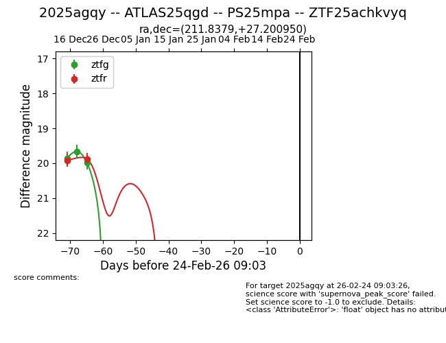
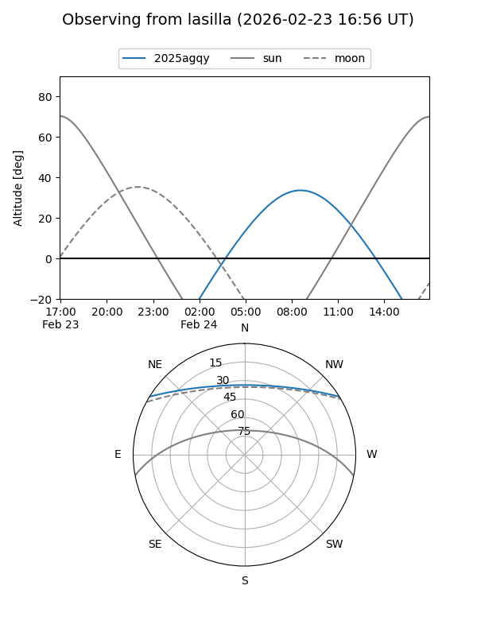
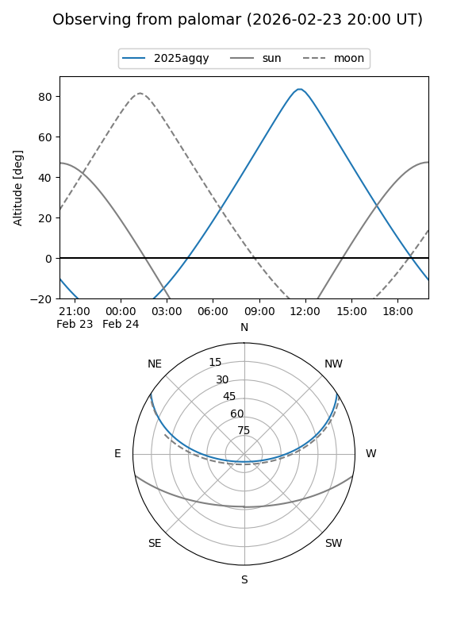
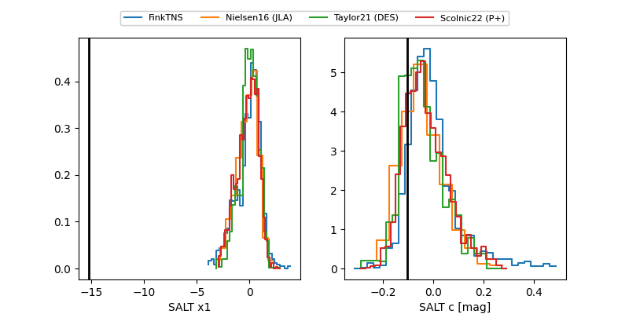

2025agqy
Target 2025agqy at 2026-01-09 12:49
Aliases and brokers:
FINK: link
Lasair: link
ALeRCE: link
TNS: link
YSE: link
alt names
ZTF25achkvyq (ztf,fink_ztf)
2025agqy (tns,yse)
ATLAS25qgd (atlas)
PS25mpa (panstarrs)
Coordinates:
equatorial (ra, dec) = 211.8379,+27.20095
equatorial (HMS+DMS) = 14:07:21.09,+27:12:03.42
galactic (l, b) = (37.5402,+73.13102)
Flags:
Photometry:
last ztfg=19.98, ztfr=19.88
3 ztfg, 2 ztfr detections
Lightcurve

Visibility


Additional plots
